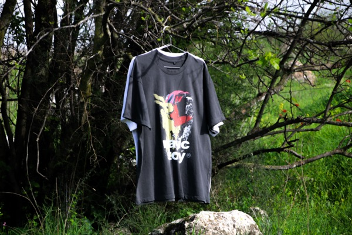
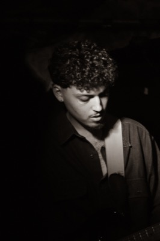
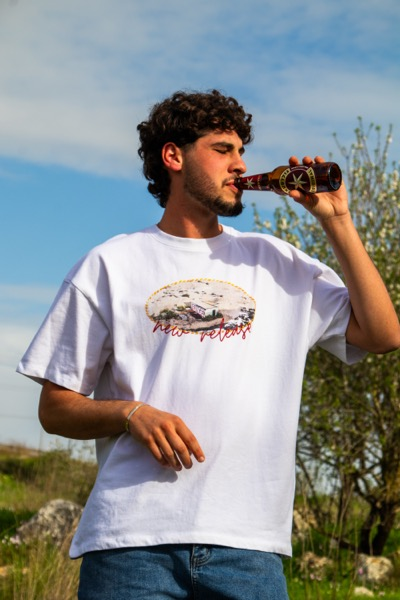

נדב בן דוד
רחוב · פורטרט · לילה
01 / 04
גלילה










לקוח: מירקה — מותג חולצות טי מודפסות. [טקסט זמני]
קונספט: קמפיין יום בהיר ורווי צבע בטבע הפתוח — שמיים כחולים, שדות ופרחים, והחולצה במרכז. [טקסט זמני]


נדב בן דוד הוא צלם רחוב ופורטרט מתל אביב. הוא עובד בעיקר בשעות הלילה ובתאורה נמוכה, ומחפש את הרגע שבו אור רחוב פוגש פנים. העבודות שלו נעות בין גוונים חמים לשחור-לבן חד.
זמין לפרויקטים מסחריים, פורטרטים אישיים ועבודות עריכה.